Research
My research examines how social policies shape economic integration through a multidimensional poverty lens (Naseh et al., 2024) among forced and unauthorized migrants
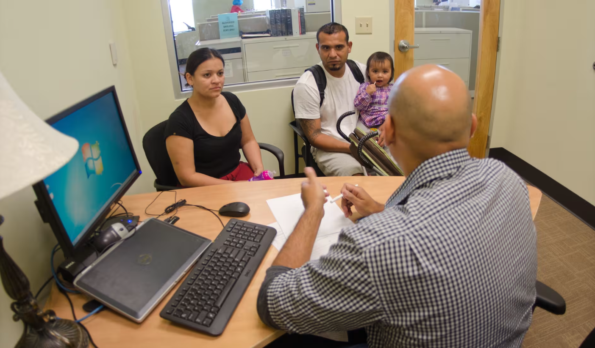
What Drives Refugees’ High Poverty in the Early Years after U.S. Resettlement?
Naseh, M., Lee, J. & Bechara, S. Migration Policy Institute.
Read more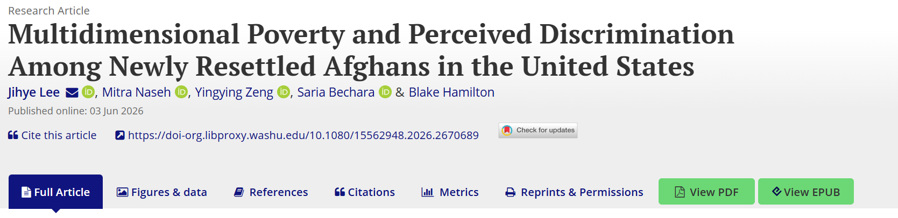
Multidimensional Poverty and Perceived Discrimination Among Newly Resettled Afghans in the United States
Lee, J., Naseh, M., Zeng, Y & Bechara, S. (2026). Journal of Immigrant & Refugee Studies.
Read more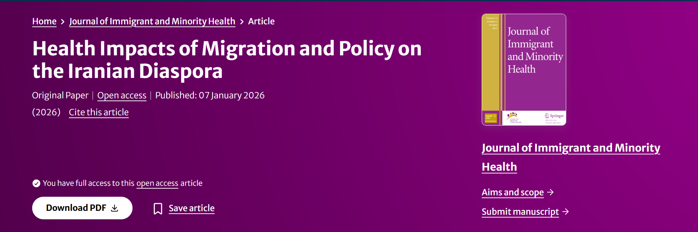
Health Impacts of Migration and Policy on the Iranian Diaspora
Lee, J., Naseh, M., Badiezadeh, S., Taridashti, S. & da Luz Scherf, E. (2026). Journal of immigrant and minority health.
Read more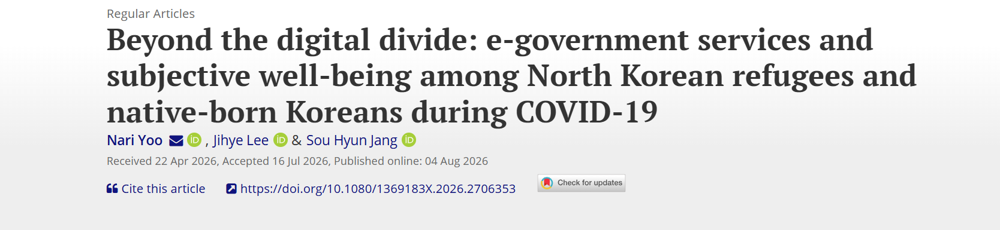
E-Government Engagement and Subjective Well-Being During the COVID-19 Pandemic: Comparing North Korean Refugees and Native Koreans
Yoo, N., Lee, J. & Jang, S. (2026). Journal of Ethnic and Migration Studies.
Read more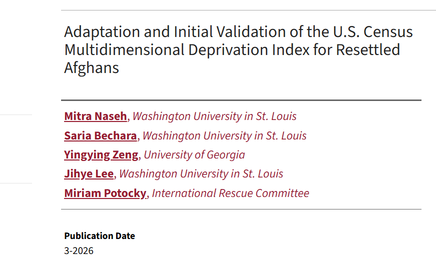
Adaptation and Initial Validation of the U.S. Census Multidimensional Deprivation Index for Resettled Afghans (Working Paper No. 01).
Naseh, M., Bechara, S., Zeng, Y., Lee, J., & Potocky, M. (2026). Forced Migration Initiative.
Read more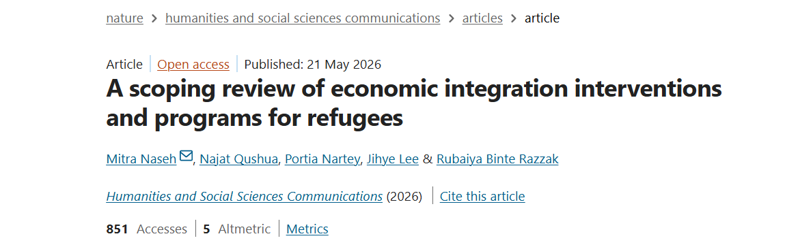
A Scoping Review of Economic Integration Interventions and Programs for Refugees
Naseh, M., Qushua, N., Nartey, P., Lee, J.. & Razzak, R. B. (2026). Humanities and Social Sciences Communications.
Read more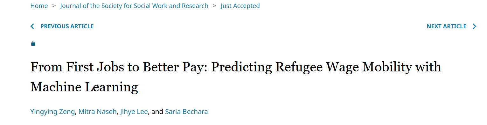
From First Jobs to Better Pay: Predicting Refugee Wage Mobility with Machine Learning
Ibrahim, H., Brugger, L., Lee, J. & Roll S. (2026). Journal of Children and Youth Services Review
Read more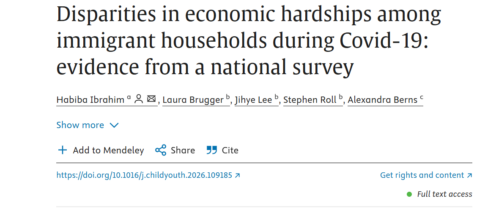
Disproportionate Economic Hardships of COVID-19 on Immigrant Households
Zeng, Y., Naseh, M., Lee, J. & Bechara, S. (2026). Journal of the Society for Social Work and Research
Read more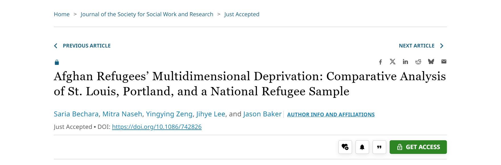
Afghan Refugees’ Multidimensional Deprivation: Comparative Analysis of St. Louis, Portland, and a National Refugee Sample
Bechara, S., Naseh, M., Zeng, Y. & Lee, J. (2026). Journal of the Society for Social Work and Research
Read more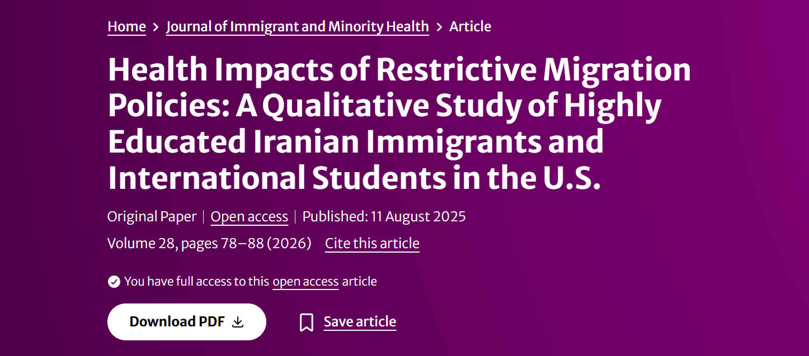
Health Impacts of Restrictive Migration Policies: A Qualitative Study of Highly Educated Iranian Immigrants and International Students in the U.S
Taridashti, S., Naseh, M., Garcia, E. M. Z., & Lee, J. (2025). Journal of immigrant and minority health, 1-11.
Read more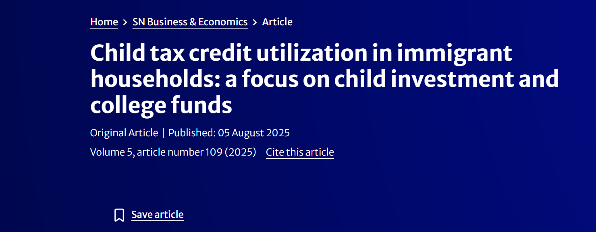
Child tax credit utilization in immigrant households: a focus on child investment and college funds
Brugger, L., Bellisle, D., Maag, E., Udani, A., Roll, S., Hamilton, L., & Lee, J. (2025). SN Business & Economics, 5(9), 109.
Read more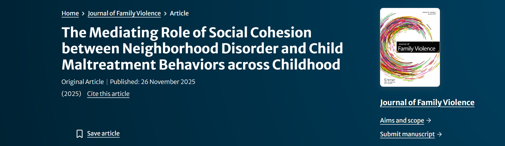
The Mediating Role of Social Cohesion between Neighborhood Disorder and Child Maltreatment Behaviors across Childhood
Chung, Y., Maguire-Jack, K., Pei, F., Lee, J., & Chang, Y (2025). Journal of Family Violence, 1-11.
Read more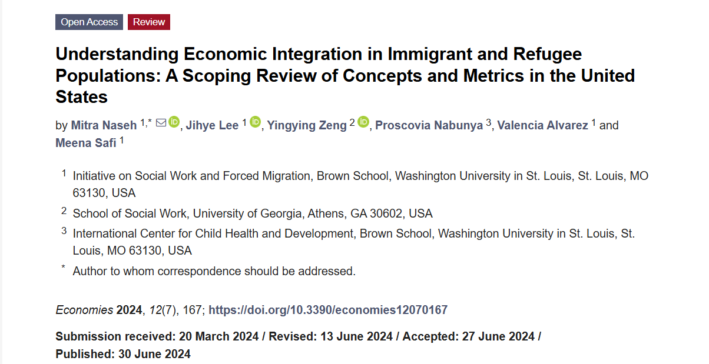
Understanding Economic Integration in Immigrant and Refugee Populations: A Scoping Review of Concepts and Metrics in the United States
Naseh, M., Lee, J., Zeng, Y., Nabunya, P., Alvarez, V., & Safi, M. (2024). Economies, 12(7), 167.
Read more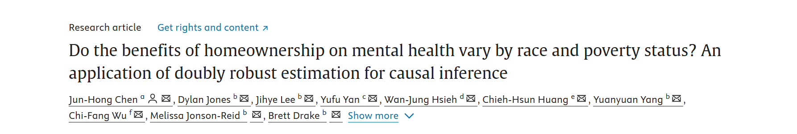
Do the benefits of homeownership on mental health vary by race and poverty status? An application of doubly robust estimation for causal inference
Chen, J., Jones, D., Lee, J., Yan, Y., Hsieh, W. J., Huang, C. H., ... & Drake, B. (2024). Social Science & Medicine, 116958.
Read more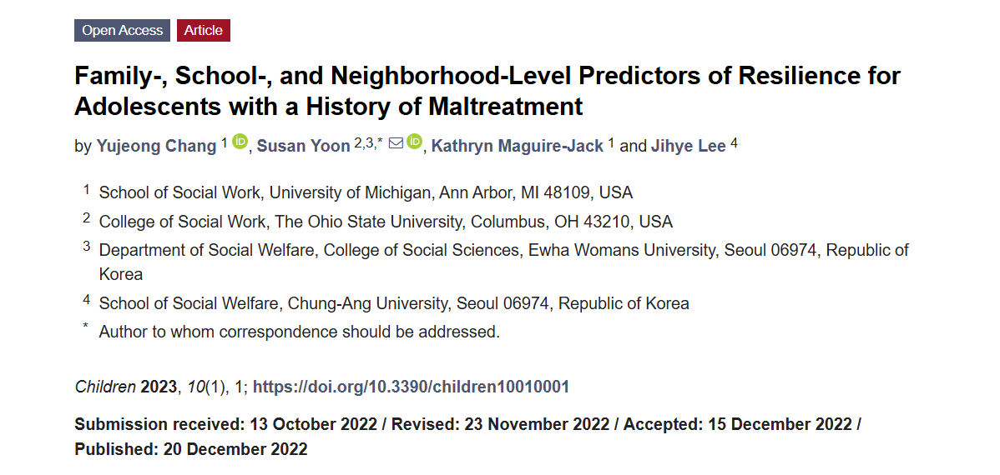
Family-, school-, and neighborhood- level predictors of resilience for adolescents with a history of maltreatment
Chang, Y., Maguire-Jack, K., Yoon, S. & Lee, J. (2022). Children 2023, 10, 1.
Read more
Restrictive U.S. Migration Policies Taking a Toll on the Health and Well-Being of Highly Educated Immigrants (PI: Mitra Naseh, Role: RA)
A new paper from the project (Taridashti et al., 2025), published last week in the Journal of Immigrant and Minority Health, examines the emotional and social consequences of U.S. migration policies such as the Travel Ban, family separation, and the uncertainty surrounding immigration processes. The study highlights how these policies fuel emotional distress, family strain, and significant mental health challenges among highly educated immigrants and international students. (Taridashti, S., Naseh, M., Garcia, E. M. Z. & Lee, J, 2025)
Read more
Economic Integration and Poverty Among the Newly Resettled Afghans: A Pilot Study (PI: Mitra Naseh, Role: RA)
This pilot study is funded by the Russell Sage Foundation (PI: Mitra Naseh) and aims to explore the economic integration of newly resettled Afghans in St. Louis, MO, and Portland, OR from a multidimensional perspective. (Naseh, M., Lee, J., Zeng, Y., Nabunya, P., Alvarez, V., & Safi, M., 2024).
Read more
The protecting role of ethnic networks during COVID-19: A pilot study among Afghan refugees in St. Louis (PI: Mitra Naseh, Role: RA)
This pilot study is funded by the Brown School at WashU in St. Louis, Neidorff Family, and Centene Corporation COVID & Health Disparity Response Fund (PI: Mitra Naseh), and aims to explore the role of ethnic networks and social connectedness in buffering the negative health impacts of COVID-19 among Afghan refugees in St. Louis.
Read moreExploring the Role of Social Position and Administrative Barriers in the Multidimensional Economic Integration of Newly Resettled Afghans in St. Louis (PI: Mitra Naseh, Role: RA)
This project is funded by the WashU Office of the Vice Chancellor for Research (PI: Mitra Naseh) and aims to explore the role of administrative barriers as well as social position in the relationship between initial support and multidimensional economic integration among newly resettled Afghans in St. Louis.
Read moreForced Migration Initiative
The Forced Migration Initiative aims to lead and coordinate research, education, and training to improve the quality of life and well-being of individuals who have experienced forced migration. The Initiative serves as a virtual and collaborative hub for migration scholars—particularly those in social work and social welfare—supporting the production of knowledge that advances the field of (forced) migration studies. (Photo by Sebastian Rich)
Read more